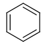
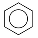

Molecules with cyclic delocalised electrons are aromatic. These molecules can be depicted differently. One may use the Kekulé form of the structure with alternating single and double bonds or use the aromatic form with aromatic bonds.
|
 Kekulé form |
 Aromatic form |
These forms are equivalent but it is not obvious how to convert from the Kekulé form of the structure to the aromatic form. Generally the following conditions are needed:
|
Examples for the Molecule representation |
Converting structure from Kekulé form to aromatic form |